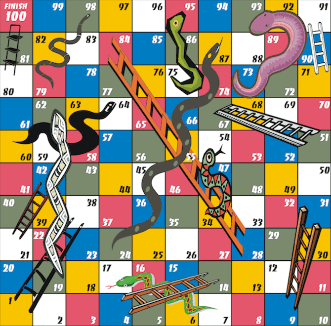

Snakes and Ladders is an ancient Indian board game regarded today as a worldwide classic.[1] It is played between two or more players on a gameboard having numbered, gridded squares. A number of "ladders" and "snakes" are pictured on the board, each connecting two specific board squares. The object of the game is to navigate one's game piece, according to die rolls, from the start (bottom square) to the finish (top square), helped or hindered by ladders and snakes respectively.
